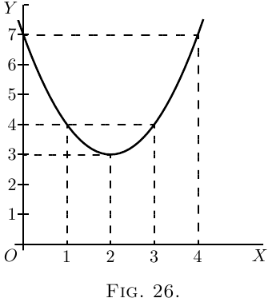
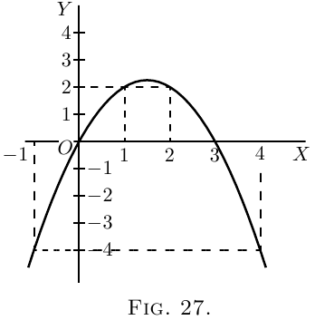
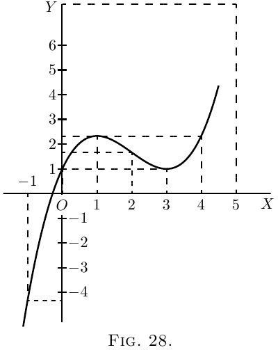
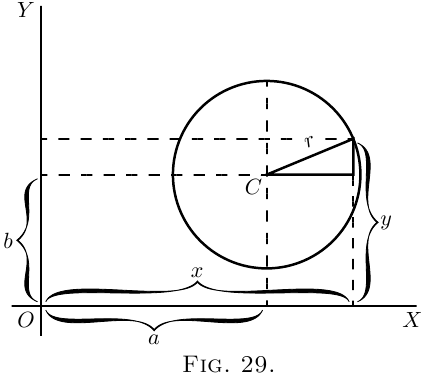
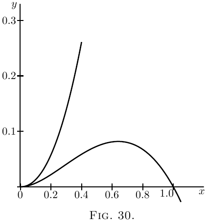

第 11 章极大值和极小值
微分过程的主要用途之一是确定在什么条件下，被微分的量的值会达到最大值或最小值。这在工程问题中往往至关重要，因为在这些问题中，了解什么条件可以使工作成本最小化或效率最大化是非常有价值的。
现在，让我们从一个具体的例子开始，考虑以下方程：

给 \(x\) 指定一系列连续的值，并找到对应的 \(y\) 值，我们可以很容易地看出该方程表示一条具有最小值的曲线。
| \(x\) | $ 0$ | $ 1 $ | \(2 \) | \(3 \) | \(4\) | $ 5$ |
|---|---|---|---|---|---|---|
| \(y\) | $ 7$ | $ 4 $ | \(3 \) | \(4 \) | \(7\) | $ 12$ |
这些值绘制在图26中，该图显示 \(y\) 在 \(x\) 等于 \(2\) 时显然有一个最小值 \(3\)。但是你确定最小值出现在 \(2\) 吗？而不是 \(x = \tfrac{1}{4}\) 或 \(x = 1 \tfrac{3}{4}\)?
当然，对于任何代数表达式，可以计算许多值，逐渐找到可能的最大值或最小值的具体值。

以下是另一个例子：
设 \(y = 3x - x^2\)。
计算一些值如下：
| \(x\) | \(-1\) | \(0\) | \(1\) | \(2\) | \(3\) | \(4\) | \(5\) |
|---|---|---|---|---|---|---|---|
| \(y\) | \(-4\) | \(0\) | \(2\) | \(2\) | \(0\) | \(-4\) | \(-10\) |
将这些值绘制在图27中。
显然，在 \(x = 1\) 和 \(x = 2\) 之间的某个位置会有一个最大值，看起来 \(y\) 的最大值大约是 \(2 \tfrac{1}{4}\)。尝试一些中间值 。如果 \(x = 1 \tfrac{1}{4}\)，\(y = 2.187\)；如果 \(x = 1 \tfrac{1}{2}\)，\(y = 2.25\)；如果 \(x = 1.6\)，\(y = 2.24\)。我们怎么能确定 \(2.25\) 是真正的最大值，并且它确实出现在 \(x = 1 \tfrac{1}{2}\) 时呢？
现在，或许听起来有些不可思议，其实有一种方法可以直接得出最大值（或最小值），而无需进行许多初步的尝试或猜测。这种方法依赖于微分。回顾前面的相关内容，你会发现，每当曲线达到最大值或最小值高度时，其导数 \(\dfrac{dy}{dx} = 0\) 。这给我们提供了一个重要线索。当你面前有一个方程，并希望找到能使其 \(y\) 达到最小值（或最大值）的 \(x\) 值时，首先对方程进行微分，然后令 \(\dfrac{dy}{dx}\) 等于零，并解出 \(x\)。将这个特定的 \(x\) 值代入原始方程，便可得到所需的 \(y\) 值 。这个过程通常被称为“令导数等于零”。
为了展示这个方法的简单性，来看看本章开头的例子：
微分后，得到：
将其等于零：
解此方程，得：
现在，我们知道最大值（或最小值）恰好发生在 \(x=2\) 时。
将 \(x=2\) 代入原始方程，得：
现在回看图26，你会发现最小值出现在 \(x = 2\) 时，其最小值 \(y = 3\)。
再尝试第二个例子（图24）：
令其等于零：
将此 \(x\) 值代入原始方程，得：
这为我们提供了确切的信息，而尝试许多值的办法则无法确定。
在进一步讨论之前，有两点需要说明。当你被要求令 \(\dfrac{dy}{dx}\) 等于零时，起初（如果你有自己的思考能力），你可能会感到某种抗拒，因为你知道 \(\dfrac{dy}{dx}\) 在曲线的不同部分有各种不同的值，具体取决于曲线是向上还是向下倾斜。因此，当你突然被要求写下：
你可能会感到疑惑，觉得这不可能正确。现在，你需要理解“一个方程”和“一个条件方程”之间的本质区别。通常情况下，你处理的方程是本身就为真的，但在某些情况下，例如现在的例子中，你需要写下一个并非始终为真的方程，而是只有在满足某些条件时才为真；写下它的目的是通过求解找到使其成立的条件。现在我们想找的是曲线既不上升也不下降的特定位置，也就是 \(\dfrac{dy}{dx} = 0\) 的地方。所以，写下 \(\dfrac{dy}{dx} = 0\) 并不意味着它始终为零；但而是作为一种条件写下，以确定当 \(\dfrac{dy}{dx}\) 为零时，\(x\) 的值是多少。
第二个需要说明的点（如果你有自己的思考能力）你可能已经注意到：这种备受推崇的令导数为零的方法，完全无法告诉你找到的 \(x\) 是会让 \(y\) 取得最大值还是最小值。确实如此。此方法本身并不区分；它为你找到正确的 \(x\) 值，但需要你自己判断对应的 \(y\) 是最大值还是最小值。当然，如果你已经绘制了曲线，就已经知道结果了。
例如，考虑方程：
不必停下来思考它对应于什么曲线，直接对其求导，并令导数为零：
将这个值代入：
将会是最大值或者最小值。但究竟是哪一个呢？稍后我们会介绍一种依赖于二阶导数的方法（见第十二章）。目前，只需尝试一个稍微偏离找到的 \(x\) 值的其他值，看看对应的 \(y\) 是大于还是小于已找到的值即可。
试试另一个简单的极值问题。假设要求你将一个数字分成两部分，使得两部分的乘积最大化。如果你不知道“令导数为零”的技巧，该如何解决？ 我想你只能反复尝试。假设数字是 \(60\)。你可以尝试将其分成两部分，并将它们相乘。例如，\(50\) × \(10\) = \(500\)，\(52\) × \(8\) = \(416\)，\(40\) × \(20\) = \(800\)，\(45\) × \(15\) = \(675\)，\(30\) × \(30\) = \(900\)。这看起来是最大值：再试试变化一下。\(31\) × \(29\) = \(899\)，这不好，\(32\) × \(28\) = \(896\)，更差。所以看起来，最大乘积是通过将数字分成两半获得的。
现在看看微积分怎么说。设这个数字为 \(n\)。如果一部分为 \(x\)，另一部分则是 \(n-x\)，它们的乘积是 \(x(n-x)\)，即 \(nx-x^2\)。因此，我们写出 \(y=nx-x^2\)。现在对其求导并令其为零：
解出 \(x\) 得到：
所以现在我们知道，无论数字 \(n\) 是多少，如果希望两部分的乘积最大化，就必须将它分成相等的两部分；且最大乘积的值总是 $ = \tfrac{1}{4} n^2$。
这是一条非常有用的规则，适用于任意数量的因子，因此如果 \(m+n+p=\) 一个常数，则 \(m×n×p\) 在 \(m=n=p\) 时达到最大值。
测试案例
我们立即将知识应用于一个可验证的例子，令
并找出该函数是否有极大值或极小值；如果有，验证它是极大值还是极小值。
求导得：
令 \(2x - 1 = 0\)，则 \(2x = 1\)，即 \(x = \tfrac{1}{2}\).
这意味着当 \(x =\frac{1}{2}\) 时，对应的 \(y\) 值将是极大值或极小值。于是将 \(x=\frac{1}{2}\) 代入原始方程，得：
这是极大值还是极小值？为检验这一点，试试将 \(x\) 的设为稍大于 \(\frac{1}{2}\) ，比如 \(x=0.6\)。那么：
比 \(-0.25\) 更大，表明 \(y = -0.25\) 是一个极小值。
绘制曲线以验证计算结果。
进一步例子
一个非常有趣的例子是具有极大值和极小值的曲线。其方程为：
求导得：

令其为零，得到二次方程：
解此方程得两个根：
当 \(x=3\) 时，\(y=1\)；当 \(x=1\) 时，\(y=2\frac{1}{3}\)。第一个是极小值，第二个是极大值。
可通过从原始方程计算的值绘制曲线（如图28所示）来验证这一结果。
| \(x\) | \(-1\) | \(0\) | \(1\) | \(2\) | \(3\) | \(4\) | \(5\) | \(6\) |
|---|---|---|---|---|---|---|---|---|
| \(y\) | \(-4\frac{1}{3}\) | \(1\) | \(2\frac{1}{3}\) | \(1\frac{2}{3}\) | \(1\) | \(2\frac{1}{3}\) | \(7\frac{2}{3}\) | \(19\) |
以下示例进一步展示关于极值的练习：
半径为 \(r\) 的圆，其圆心 \(C\) 位于点 (\(x=a\),\(y=b\))（如图29所示），方程为：

这个方程可以变形为：
通过简单观察图形，我们可以预先知道，当 \(x=a\) 时，\(y\) 要么取最大值 \(b+r\)，要么取最小值 \(b-r\)。但现在我们不依赖这个知识，而是通过求导并令其为零来找到使 \(y\) 取得极值的 \(x\) 值。
\(y\) 取得极大值或极小值的条件是：
因为无论 \(x\) 取任何值分母都不会无限大，唯一可能的条件是：
将此值代入圆的原始方程，得到：
由于 \(r^2\) 的平方根为 \(+r\) 或 \(-r\)，我们得到两个 \(y\) 的值：
第一个值是顶部的最大值，第二个值是底部的最小值。
如果曲线没有极大值或极小值，那么求导并令其为零的过程将导致不可能的结果。例如：
令
则
令其为零，得到 \(3ax^2 + b = 0\)
这是不可能的结果。
因此 \(y\) 没有极大值或极小值。
通过一些更多的实例，你可以彻底掌握这种有趣且实用的微积分应用。
(1) 在半径为 \(R\) 圆内，面积最大的矩形的边长是多少？
设一条边为 \(x\)，则另一条边为：
由于矩形的对角线必定是直径，另一条边为：$ = \sqrt{4R^2 - x^2}$。
矩形的面积为 \(S = x\sqrt{4R^2 - x^2}\)
如果你忘记如何对 \(\sqrt{4R^2-x^2}\) 求导，可以这样做：设 \(4R^2-x^2=w\)，而 \(y=\sqrt{w}\)，分别求 \(\dfrac{dy}{dw}\) 和 \(\dfrac{dw}{dx}\)。如果实在搞不定，可以参考第9章。
最终可以得到：
要取得极值，需满足：
即 \(4R^2 - 2x^2 = 0\)，解得 \(x = R\sqrt{2}\)。
另一条边为：
两条边相等，因此该矩形是一个正方形，其边长等于以半径构建的正方形对角线。显然，这种情况下我们求的是最大值。
(2) 一个锥形容器的侧面长度为 \(l\) 时，其容器开口的半径是多少，才能使容器的容量最大？
设 \(R\) 为开口的半径，\(H\) 为为对应的高，则 \(H = \sqrt{l^2 - R^2}\)。
按照上一题的方法，我们得到：
用于最大值或最小值的条件。
化简得：\(2\pi R(l^2 - R^2) - \pi R^2 = 0\)，解得 \(R = l\sqrt{\tfrac{2}{3}}\)，显然是最大值。
(3) 求如下函数的极大值和极小值。
我们有：
用于极大值或极小值的条件；即：
只有一个值，因此只有一个极大值或极小值。
因此这是一个极小值。（绘制函数图形会更直观。）
(4) 求函数 \(y = \sqrt{1+x} + \sqrt{1-x}\) 的极大值和极小值。(绘制函数图形会很有启发。)
对其求导，直接得到：
用于极大值或极小值的条件。
因此，\(\sqrt{1+x} = \sqrt{1-x}\)，解得 \(x = 0\)，这是唯一的解。
当 \(x=0\)，\(y=2\)。
当 \(x=±0.5\)，\(y= 1.932\)，因此这是极大值。
(5) 求如下函数的极大值和极小值
我们有：
用于极大值或极小值的条件；即
化简为 \(x^2 - 4x + 5 = 0\)，解得：
由于解为虚数，因此 \(x\) 没有实数值满足 \(\dfrac{dy}{dx} = 0\)，因此没有极大值或极小值。
(6) 求如下函数的极大值和极小值。
化简为 \(y = x^2 ± x^{\frac{5}{2}}\)。
用于极大值或极小值的条件；即： \(x = 0\) 和 \(2 ± \tfrac{5}{2} x^{\frac{1}{2}} = 0\)，解得 \(x = 0\) 和 \(x=\tfrac{16}{25}\)，因此有两个解。因此,有两种解决办法。
首先取 \(x = 0\)。如果 \(x = -0.5\)，则 \(y = 0.25 ± \sqrt[2]{-(.5)^5}\)，如果 \(x = +0.5\)，则 \(y = 0.25 ± \sqrt[2]{(.5)^5}\)。在一侧，\(y\) 是虚数，也就是说 \(y\) 没有可以用图像表示的值；第二个值则完全位于 \(y\) 轴的右侧(见图30)。
在绘制图像后，可以发现曲线到达原点，似乎在那里有一个极小值；但曲线并未像极小值那样继续超越原点，而是回溯其路径（形成所谓的“尖点”）。因此，尽管满足极小值的条件 \(\dfrac{dy}{dx} = 0\)，但实际上没有极小值。因此，必须通过取左右两侧的值来进行验证。

现在取 \(x = \tfrac{16}{25} = 0.64\)。当 \(x = 0.64\)，\(y = 0.7373\) 和 \(y = 0.0819\)；当 \(x = 0.6\)，\(y\) = \(0.6389\) 和 \(0.0811\)；当 \(x = 0.7\)，\(y\) = \(0.8996\) 和 \(0.0804\)。
这表明曲线有两个分支；上分支未经过极大值，但下分支经过了一个极小值。
(7) 一个圆柱体的高是底面半径的两倍，体积随时间增加，且其各部分始终保持相同比例。当底面半径为 \(r\) 厘米时，表面积以每秒 \(20\) 平方厘米的速度增加，求此时体积增加的速率。
体积以 \(10r\) 立方厘米每秒的速率变化。